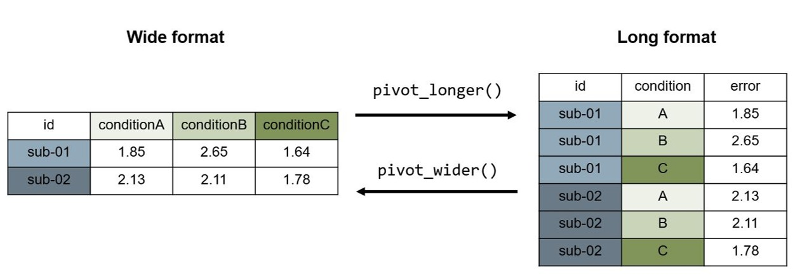

# Download und Installieren des Packages (nur einmal ausführen)
install.packages("tidyverse")Daten importieren und vorverarbeiten mit R
Workflow
Zur Analyse von Daten gehören viele einzelne Schritte in R. Um den Überblick zu behalten hilft es die wichtigsten Prozesse zu kennen.
- Import: Importieren des Datensatzes
- Tidy: Bereinigen des Datensatzes (z.B. Identifizieren von fehlenden Werten)
- Transform: Transformieren des Datensatzes (z.B. Erstellen neuer Variablen, Umformattierung von long zu wide)
- Visualize: Visualisieren des Datensatzes
- Model: Analysieren des Datensatzes (z.B. Ausführen eines t-Tests)
- Communicate: Kommunizieren der Daten, Analysen und Schlussfolgerungen
Das Transformieren, Visualisieren und Modellieren dient dazu, die Daten zu verstehen und daraus Schlussfolgerungen ziehen zu können.

NoteWollen Sie mehr darüber wissen?
Hier finden Sie das Buch R for Data Science
In R gibt es sehr viele hilfreiche Funktionen und Packages, die für die Vorverarbeitung und Analyse neurowissenschaftlicher Verhaltensdaten (oder extrahierten Daten aus bildgebenden Verfahren) verwendet werden können. Beim Arbeiten in R empfiehlt es sich durchgehend in einem R-Script, RNotebook oder R-Markdown Dokument (.Rmd) innerhalb eines RStudio-Projects zu arbeiten, da so ein reproduzierbarer Workflow erstellt werden kann. Ein weiterer Vorteil ist zudem, dass Rohdaten nicht verändert werden müssen.
In diesem Kapitel finden Sie die wichtigesten data wrangling Funktionen des {tidyverse}-Packages:
- die Pipe:
|> - Daten einlesen:
read.csv() - Daten filtern:
filter() - Variablen auswählen:
select() - Variablen generieren/verändern:
mutate() - Variablentyp verändern:
as.factor(),as.numeric - Gruppieren und zusammenfassen:
group_by() - Datensätze speichern:
write.csv()
Datenformate
Bevor mit einem Datensatz gearbeitet wird, empfiehlt es sich den Datensatz anzuschauen und Folgendes zu identifizieren:
In welchem Dateiformat ist der Datensatz gespeichert? (z.B. in
.csv,.xlsxoder anderen?)In welchem Datenformat ist der Datensatz geordnet? (
longoderwideodermixed?)Gibt es ein
data dictionarymit Erklärungen zu den Variablen?
Long-Format
Datensätze können im Long-Format und im Wide-Format formattiert sein.
- Jede Variable (jede gemessene Eigenschaft) entspricht einer Spalte (column)
- Jede Messung entspricht einer Zeile (row)
Wird eine Variable innerhalb einer Person mehrmals gemessen (z.B. error), dann hat jede Messung eine neue Zeile und die anderen Variablenwerte werden wiederholt (z.B. id). Dieses Format eignet sich sehr gut für die Datenvisualisierung und für die Datenanalyse in R.
Wide-Format
- Jede Einheit hat eine Zeile (row)
- Jede Messung entspricht einer Spalte (column)
Dieses Format eignet sich, um fehlende Werte schnell zu entdecken und um Daten einzugeben.

CautionHands-on: Vorbereitung
Öffnen Sie RStudio.
Erstellen Sie ein neues RStudio-Project.
Klicken Sie dafür auf
File>New ProjectBenennen Sie das Project
complab_fs26und speichern Sie es an einem sinnvollen Ort auf Ihrem Computer. Wählen Sie, dass dafür ein neuer Ordner erstellt werden soll.
Erstellen Sie in diesem Projekt-Ordner einen Ordner namens
data.Kopieren Sie in den
data-Ordner Ihre erhobenen Daten des Stroop Experiments. Falls Sie noch keine Daten erhoben haben, dann laden Sie hier einen Beispiels-Datensatz herunter und speichern Sie ihn imdata-Ordner.Erstellen Sie ein neues RScript oder ein RNotebook (
.Rmd-File:File>New File>RNotebook) und speichern Sie dieses unterintro_datawranglingim Projekt-Ordner.
TipTipp: Namensgebung für Files und Variablen
Wenn Sie Filenamen auswählen, achten Sie darauf dass diese machine-readable sind:
keine Lücken (verwenden Sie stattdessen den
camelCase, densnake_caseoder-)keine
ä,ö,üoder andere Sonderzeichen verwenden
Packages installieren und laden
Für das Bearbeiten der Daten verwenden eignen sich Funktionen aus dem Package {tidyverse}, eine Sammlung von verschiedenen, für data science sehr geeigneten R Packages. Funktionen aus dem {tidyverse} ermöglichen und vereinfachen viele Schritte der Datenverarbeitung. Im Folgenden werden die wichtigsten und häufigst verwendeten Funktionen beschrieben. Das {tidyverse} können Sie direkt in R herunterladen:
Ein Package muss nur einmal heruntergeladen und installiert werden, danach ist es lokal auf dem Computer gespeichert. Aber: Jedes Mal wenn R geöffnet wird, müssen Packages wieder neu geladen werden.
# Package laden (bei jedem Öffnen von R zu Beginn des Skripts ausführen)
library("tidyverse") Sobald ein Package installiert ist, können die Funktionen auch verwendet werden ohne, dass das ganze Package mit library() geladen wird, indem die Funktion mit dem Package-Namen zusammen aufgerufen wird: packagename::packagefunction(). Dies macht Sinn, wenn verschiedene Packages dieselben Namen für verschiedene Funktionen nutzen und es so zu Konflikten kommt oder wenn nur eine Funktion aus einem Package verwendet werden soll und alle anderen sowieso nicht gebraucht werden.
Daten importieren in R: read.csv()
Einen Datensatz in .csv-Format kann mit der Funktion read.csv() importiert werden. Teilweise muss innerhalb der Klammer zusätzlich der Separator mit sep = "," angegeben werden, also mit welchem Zeichen die Spalten getrennt sind. Normalerweise ist dies , in .csv (comma separated values), es kann aber auch ;, . oder eine Lücke sein.
# Daten laden und anschauen
d_stroop <- read.csv("data/stroop_example.csv", sep = ",")
glimpse(d_stroop)
CautionHands-on: Daten einlesen
Lesen Sie den Stroop Datensatz in Ihrem data-Ordner ein und schauen Sie ihn dann mit den Funktionen glimpse() und head() an.
Welche Variablen sind wichtig für die weitere Auswertung?
Welche braucht es wahrscheinlich nicht mehr?
Finden Sie Versuchspersonenidentifikation? / Reaktionszeit? / Antwort der Versuchsperson?
TipTipp: Daten anderer Formate einlesen
Falls Sie eine Excel-Datei einlesen möchten, können Sie dies mit der read_excel()-Funktion aus dem Package readxl() tun: readxl::read_excel().
Falls Sie nicht wissen, mit welcher Funktion Sie Ihre Daten einlesen können, können Sie dies in RStudio ausprobieren indem Sie beim Reiter Environment auf Import Dataset klicken und dort Ihren Datensatz auswählen oder über File > Import Dataset. Sie können dort diverse Einstellungen tätigen. In der R Console können Sie dann den Code sehen, der zum Einlesen verwendet wurde und die dortige Funktion in Ihren Code kopieren.
Verwenden der Pipe: |> oder %>%
In R können Sie die Pipe verwenden um mehrere Datenverarbeitungsschritte aneinander zu hängen. Damit sparen Sie sich aufwändige Zwischenschritte und vermeiden das Erstellen von immer neuen Datensätzen. Statt zwei einzelne Datenverarbeitungsschritte zu machen wie oben, können mehrere Schritte (hier Daten einlesen und anzeigen) zusammengefasst werden, in dem nach Zeilenende eine Pipe eingefügt wird:
d_stroop <- read.csv("data/stroop_example.csv", sep = ",") |>
glimpse()Die Base R Pipe |> und die magritter Pipe %>%_ unterscheiden sich in Details, in diesem Kapitel spielt es jedoch keine Rolle, welche Pipe Sie verwenden.
TipTipp
Achtung: Wenn wir zu Beginn ein <- oder = verwenden, wird alles was nach der Pipe kommt wird ebenfalls im Datensatz verändert. Wird z.B. der Code …
d_stroop <- read.csv("data/stroop_example.csv", sep = ",") |>
head()…eingegeben, besteht der Datensatz d_stroop dann nur noch aus 6 Zeilen, weil die Funktion head() den Datensatz auf die ersten 6 Zeilen kürzt.
Wird die Pipe ohne <- oder = verwendet, bleibt der Datensatz unverändert:
d_stroop |>
head()Daten filtern: filter()
Mit filter() können bestimmte Beobachtungen oder Untergruppen ausgewählt werden. Hierfür muss in der Funktion filter(.data, filter, ...) der Datensatz, die betreffende Variable, sowie eine Bedingung eingegeben werden. Es wird die ganze Zeile im Datensatz behalten in der die Variable der Bedingung entspricht.
Beispiele:
# nur die Trials mit den rot angezeigten Wörtern behalten
d_stroop_filtered <- filter(d_stroop, color == "red")
# dasselbe mit der Pipe
d_filtered <- d_stroop |> filter(color == "red")
# nur Trials die ohne blau angezeigten Wörter behalten
d_filtered <- d_stroop |> filter(color != "blue")
# nur Übungstrials mit einer Antwortszeit unter oder gleich gross wie 1 Sekunde behalten
d_filtered <- d_stroop |> filter(respPractice.rt <= 1)
# nur Übungstrials mit Antwortzeiten zwischen 1 und 2 Sekunden behalten
d_filtered <- d_stroop |> filter(respPractice.rt > 1 & respPractice.rt < 2)
# mehrere Filter verwenden
d_filtered <- d_stroop |>
filter(color == "red") |>
filter(respPractice.rt <= 1)In unserem Datensatz möchten wir nur die gültigen Experimentdaten behalten, die Color-To-Key (ctk) Bedingung sowie die Practice Trials möchten wir ausschliessen.
Die Variable trials_test.thisN enthält die Trialnummer, sie enthält nur Einträge, während der gültigen Trials. Wir können dies nutzen und alle Zeilen behalten in welchen die Zelle der Variable trials_test.thisN nicht leer ist:
d_stroop <- d_stroop |>
filter(!is.na(trials_test.thisN))
CautionHands-on: Daten filtern
Erstellen Sie einen neuen Datensatz namens d_stroop_correct und filtern Sie diesen so dass er nur Trials mit richtigen Antworten enthält. Schauen Sie in der Variable keyResp_test_run.corr, ob tatsächlich nur noch richtige Antworten übrig geblieben sind.
Achtung: Arbeiten Sie in den weiteren Schritten nicht mit diesem Datensatz weiter, da wir die falschen Antworten in einem nächsten Schritt noch im Datensatz brauchen.
Variablen auswählen: select()
Ein komplexer Datensatz mit sehr vielen Variablen wird oft für die Analyse aus Gründen der Einfachheit oder Anonymisierung reduziert. Das bedeutet, dass man sich die nötigen Variablen herausliest, und nur mit diesem reduzierten Datensatz weiterarbeitet. Hierzu eignet sich die Funktion select() sehr gut: Mit select(.data, variablenname, ...) können die zu behaltenden Variablen ausgewählt werden. Wird ein ! vor einen Variablennamen gesetzt, wird die Variable nicht behalten.
Mit select() können wir auch die Variablen sortieren und umbenennen, damit unser Datensatz so strukturiert ist, wie wir ihn gebrauchen können.
Beispiele:
# Variable word und color behalten ohne Pipe
d_simpler <- select(d_stroop, word, color)
# Variable word und color behalten mit Pipe
d_simpler <- d_stroop |> select(word, color)
# alle Variablen ausser word behalten
d_simpler <- d_stroop |> select(!word)
# Variablennamen verändern
d_simpler <- d_stroop |> select(newvariablename = word)Sollen mehrere Variablen am Stück ausgewählt werden, kann man die erste Variable in der Reihe (z.B. word) und die letzte in der Reihe (z.B. congruent) als word:congruent eingeben, dann werden auch alle dazwischen liegenden Variablen ausgewählt.
CautionHands-on: Variablen auswählen
Schauen Sie sich Ihren Datensatz an, welche Variablen benötigen Sie für die weitere Analysen?
Erstellen Sie einen neuen Datensatz d_stroop_clean in welchem Sie die entsprechenden Variablen auswählen und umbennen, wenn Sie Ihnen zu lange/kompliziert erscheinen.
Untenstehend finden Sie ein Beispiel, wie der Datensatz danach aussehen könnte.
Rows: 120
Columns: 10
$ id <chr> "sub-154989", "sub-154989", "sub-154989", "sub-154989", "su…
$ experiment <chr> "stroop_test", "stroop_test", "stroop_test", "stroop_test",…
$ trial <int> 0, 1, 2, 3, 4, 5, 6, 7, 8, 9, 10, 11, 12, 13, 14, 15, 16, 1…
$ word <chr> "rot", "rot", "blau", "gelb", "rot", "blau", "blau", "gelb"…
$ color <chr> "red", "red", "blue", "yellow", "yellow", "yellow", "red", …
$ corrAns <chr> "r", "r", "b", "g", "g", "g", "r", "r", "b", "g", "b", "b",…
$ congruent <int> 1, 1, 1, 1, 0, 0, 0, 0, 0, 1, 1, 0, 1, 1, 1, 0, 0, 1, 1, 0,…
$ response <chr> "r", "r", "b", "g", "g", "g", "r", "r", "b", "g", "b", "b",…
$ rt <dbl> 1.0639791, 0.7370255, 1.1883303, 1.2007897, 1.6688681, 1.58…
$ accuracy <int> 1, 1, 1, 1, 1, 1, 1, 1, 1, 1, 1, 1, 1, 1, 1, 1, 1, 1, 1, 1,…Neue Variablen generieren und verändern: mutate() und case_when()
Mit der mutate(.data, …) Funktion können im Datensatz neue Variablen generiert, bestehende Variablen verändert und bestehende Variablen gelöscht werden.
Beispiel:
# Neue Variablen erstellen
d_new <- d_stroop_clean |>
mutate(num_variable = 1.434,
chr_variable = "1.434",
sumofxy_variable = rt + 1,
copy_variable = word)
# Bestehende Variablen verändern
d_new <- d_new |>
mutate(num_variable = num_variable * 1000) # z.B. um Sekunden zu Millisekunden zu machen
# Bestehende Variablen löschen
d_new <- d_new |>
mutate(copy_variable = NA) # z.B. um Sekunden zu Millisekunden zu machenMit case_when() kann eine neue Variable erstellt werden in Abhängigkeit von Werten anderer Variablen. Damit kann z.B. eine Variable accuracy erstellt werden, die den Wert correct hat, wenn die Aufgabe richtig gelöst wurde (z.B. Bedingung rot und Tastendruck r) und sonst den Wert error hat.
Beispiel:
d_condvariable <- d_stroop_clean |>
mutate(cond_variable = case_when(rt > 0.8 ~ "higher",
rt <= 0.8 ~ "lower",
.default = NA))
CautionHands-on: Variablen generieren und verändern
Erstellen Sie im Datensatz
d_stroop_cleaneine neue Variable mit dem Namenresearcher, den Ihren Namen enthält.Erstellen Sie zudem eine Variable
accuracy_check, mitcorrectfür korrekte underrorfür inkorrekte Trials. Kontrollieren Sie mit der VariablekeyResp_test_run.corr(oder Ihrem neuen Variablennamen, wenn Sie diese umbenannt haben) im Datensatz, ob Sie die Aufgabe richtig gelöst haben.Ändern Sie die Trialnummer, so dass sie nicht mehr mit 0 beginnt, sondern mit 1.
Variablenklasse verändern: as.factor(), as.numeric(), …
Variablen können verschiedene Klassen haben, sie können z.B. kategoriale (factor, character) oder numerische (integer, numeric, double) Informationen enthalten. Beim Einlesen “rät” R, welche Klasse eine Variable hat. Teilweise möchten wir dies ändern. Wenn wir eine Variable zu einem Faktor machen möchten, verwenden wir as.factor(). Dies macht z.B. Sinn, wenn die Versuchspersonennummer als Zahl eingelesen wurde. Um von einem Faktor zu einer numerischen Variable zu kommen, verwenden wir as.numeric().
# Die Variable "congruent" zu einem Faktor machen
d_stroop_clean |>
mutate(congruent = as.factor(congruent))
CautionHands-on: Variablenklassen
Schauen Sie sich den Datensatz mit glimpse() oder mit View() an. Welche Klassen enthält Ihr Datensatz und was bedeuten Sie?
Daten gruppieren und zusammenfassen: group_by() und summarise()
Mit diesen beiden Funktionen können wir mit wenig Code den Datensatz gruppieren und zusammenfassen.
# Nach Wörter gruppieren
d_stroop_clean |> group_by(word) |>
summarise(mean_rt = mean(rt),
sd_rt = sd(rt))# A tibble: 3 × 3
word mean_rt sd_rt
<chr> <dbl> <dbl>
1 blau 1.23 0.490
2 gelb 1.26 0.447
3 rot 1.16 0.552
CautionHands-on: Daten zusammenfassen
Erstellen Sie einen neuen Datensatz d_stroop_summary
Gruppieren Sie den Datensatz für Wortfarbe und Kongruenz.
Fassen Sie für diese Gruppen die durchschnittliche Antwortzeit und Accuracy sowie die Standardabweichungen zusammen.
Datensätze speichern: write.csv()
write.csv(d_stroop_clean, file = "data/dataset_stroop_clean.csv", row.names = FALSE)
CautionHands-on: Datensätze speichern
Speichern Sie einen neuen Datensatz mit den vorverarbeiteten Daten.
Footnotes
Wickham, H., Çetinkaya-Rundel, M., Grolemund, G. (2025). R for Data Science (2e). https://r4ds.hadley.nz↩︎